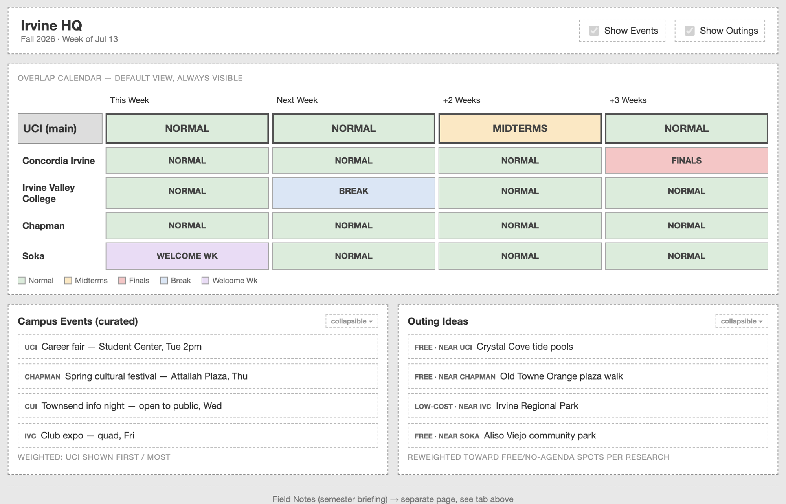
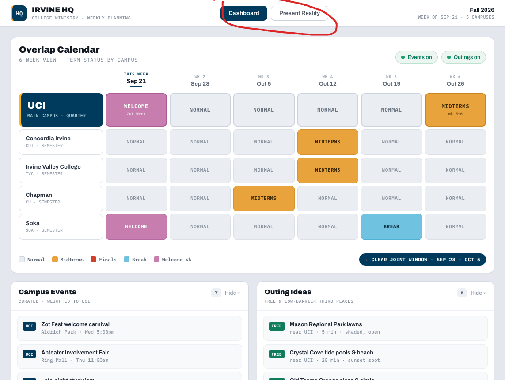
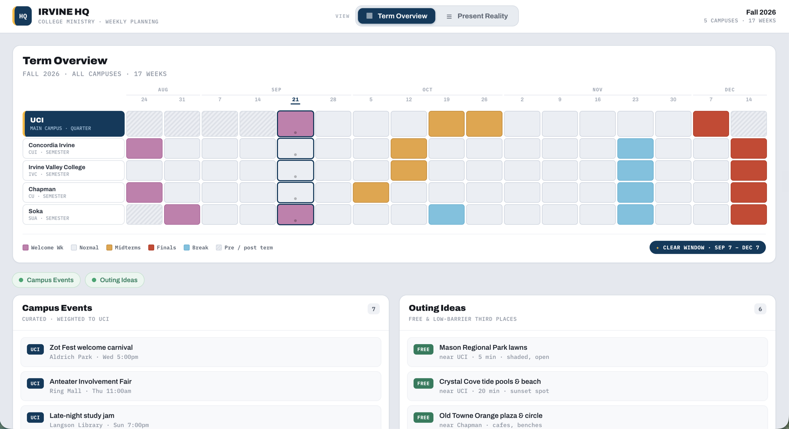
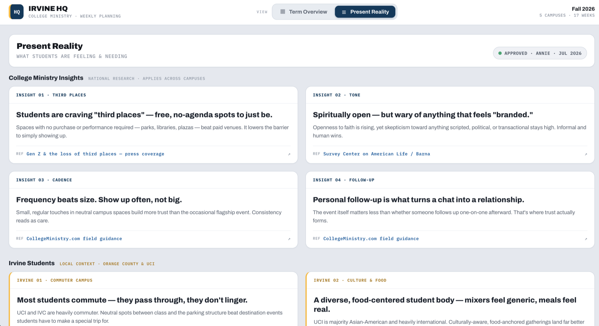
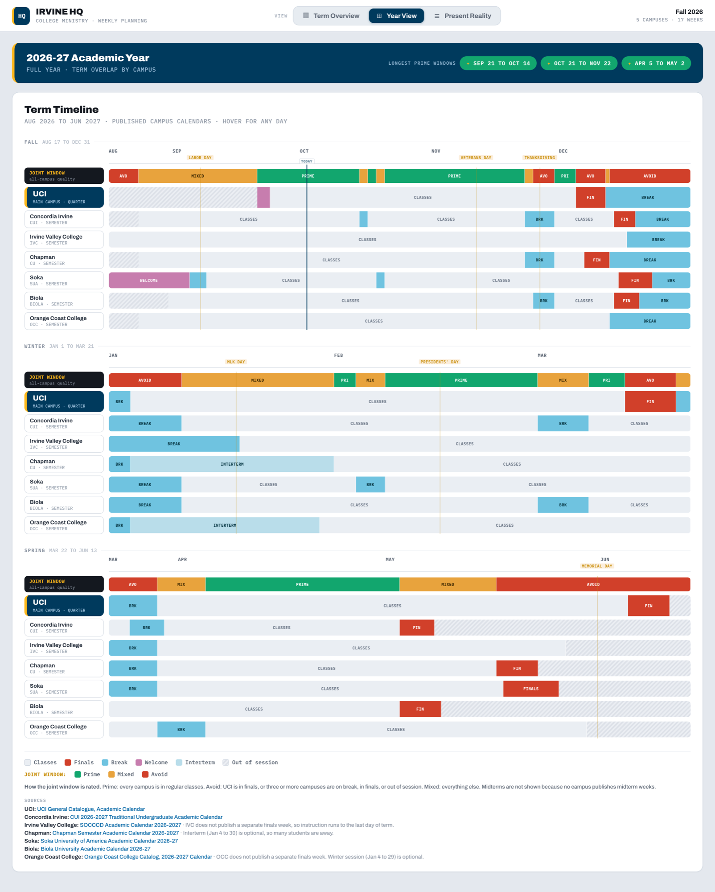

Acts2 Network's college ministry team in Irvine meets on Sundays to plan outreach and outings. UCI is our main campus. Concordia, Irvine Valley College, Chapman, and Soka help us spot openings when UCI is busy.
UCI is on quarters and the others are on semesters, so exams and breaks rarely line up. Each campus also posts events differently, and some don't post them anywhere a tool can read.
Two academic systems and five event sources. An outing during UCI finals won't get turnout, and deadlines like club fair sign-ups are easy to miss.
It's projected during the meeting, so it has to be readable from across the room. It's a public link, so no private team info.
I built v1 as part of my Acts2 Network contract, right after an AI bootcamp Acts2 ran for its staff. AI generated the wireframe, visual design, and code. I wrote the brief, reviewed each stage, and decided what to change.


Each choice and its reason went into a DECISIONS.md file. When I came back months later for v2, I didn't have to guess why I'd done anything.
In October I found that some event details the AI filled in were wrong, like the date and location of UCI's involvement fair. I replaced all UCI info with data from official UCI pages. The v1 screenshots below still show the old placeholder events.
Background agents in my setup couldn't write files, so I used them for research only and made all code changes in the main session.
Term Overview shows when each campus is free. Present Reality summarizes what students are dealing with right now.

It's our main campus, so its row is bigger and uses UCI's navy and gold.
Semester schools start in August and UCI starts in late September. Blank cells were confusing, so I added stripes.
The tool finds the weeks when every campus is in a normal week and labels them. That's usually the first question in the meeting.
A dot means a week has campus events. The event and outing panels can be hidden while projecting.
These cards summarize published research on college students, plus local context like commuting. An LLM drafted them from published sources, and I reviewed and approved each one.

The header shows who approved the content and when, so the team knows a person reviewed it.
Each card links to where the claim came from, so anyone can check it.
I review new notes by hand. For this content, source quality matters more than speed.
When I checked the sources for v2, one link returned a 404, two no longer loaded, and several only linked to a homepage. Fixing these so each card links to its exact source is part of v2.
I'm still improving Irvine HQ, one feature at a time. The next features send the team updates and suggestions, so they don't have to go looking.

Each day is rated Prime, Mixed, or Avoid, and the rule is printed under the grid so the team can check it. I'm taking the same approach with the AI suggestion.
No campus publishes midterm dates, so the Year View leaves them out and says so.
A day-by-day monthly calendar, and a full-year view that adds Biola and Orange Coast College.
Term dates, class times, and tabling rules now come from official UCI pages.
This week on top (actions, deadlines, events, tabling times) and upcoming plans below. We once missed a tabling rush because we didn't know UCI's class schedule.
An automatic message before the Sunday meeting with only what the team needs to know.
One recommended next step, with the reasons shown so the team can decide for themselves.
Quick feedback on each suggestion. With a small team, I'll read it as qualitative feedback.
I maintain this alone on free plans, so I kept the stack simple.
A small iCal parser in place of a library. Only the next 90 days of UCI events are stored. Duplicate Soka events are removed.